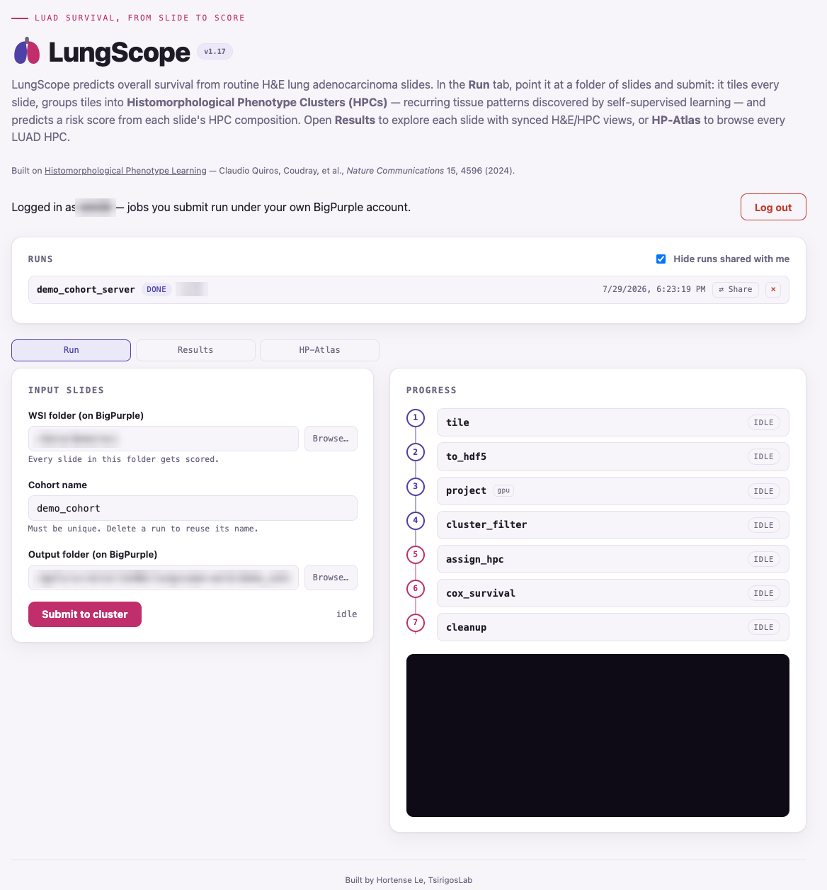
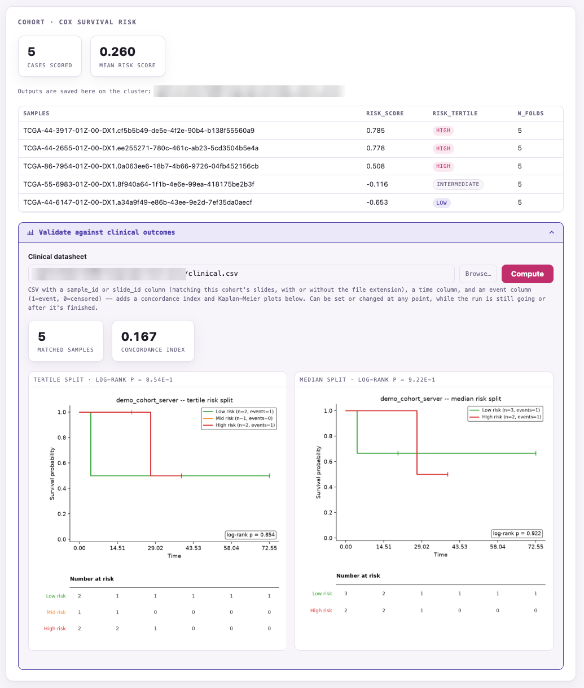
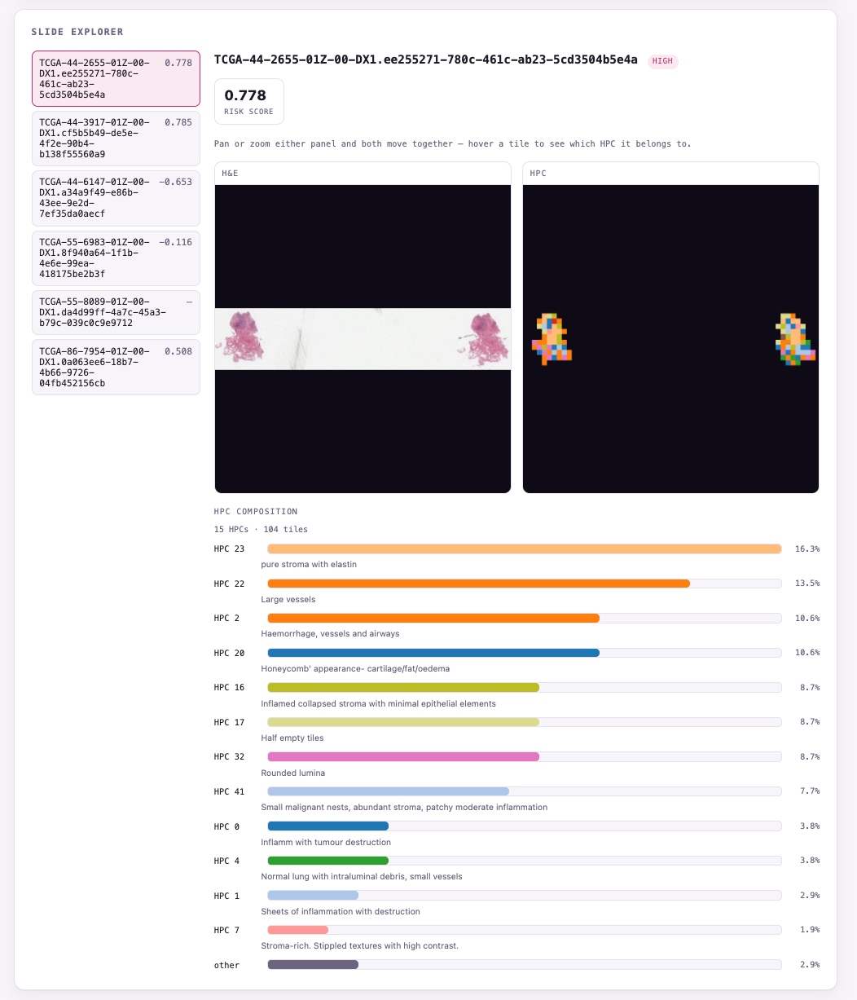

Web app · Lung adenocarcinoma
LungScope
Predicts overall survival from routine H&E lung adenocarcinoma slides. Point it at a folder of slides and it tiles each one, groups tiles into Histomorphological Phenotype Clusters (HPCs) (recurring tissue patterns found by self-supervised learning), then scores risk from each slide's HPC composition.
- Run: submits a 7-step GPU pipeline to the cluster under the user's own account, with live progress.
- Results: Cox risk scores and tertiles, plus concordance index and Kaplan–Meier curves against a clinical file.
- Slide explorer & HP-Atlas: synced H&E / HPC views and a browsable atlas of every HPC.
PythonPyTorchSSLCox survivalSLURMWeb app
Hosted on an internal NYU server and not publicly accessible, so it's shown here as screenshots (public TCGA demo slides).


